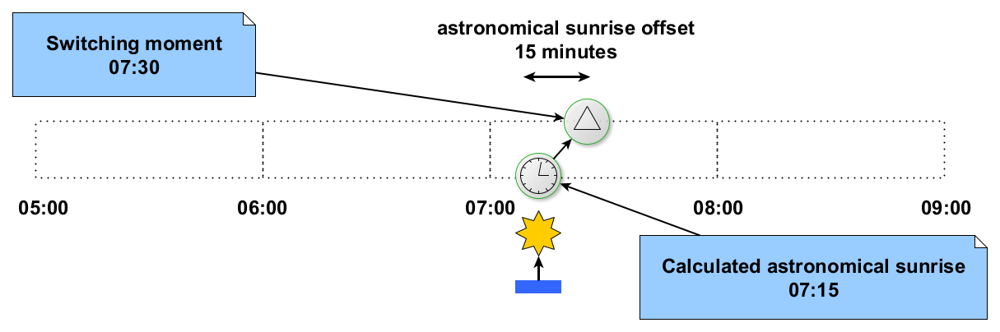
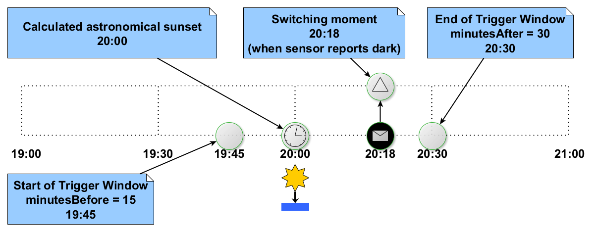
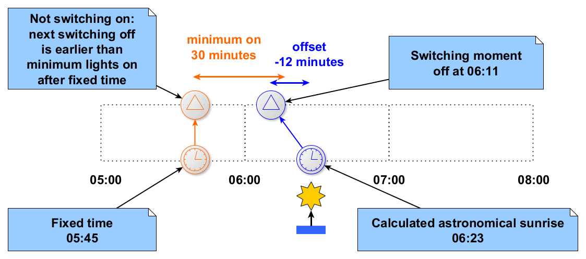
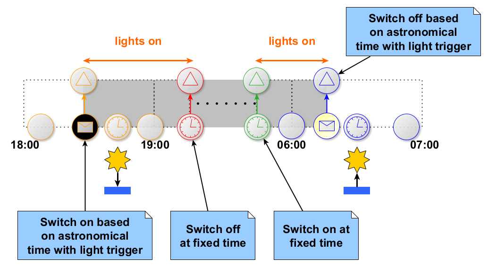

Schedules for light switching can be set using Set Schedule requests from the Public Lighting Schedule Management web service.
For brevity the XML element and type names in the descriptions below will not include the namespace
(which will typically be "http://www.opensmartgridplatform.org/schemas/publiclighting/schedulemanagement/2014/10").
A switching schedule is defined by a number of declarations of switching moments (also known as schedule entries).
The SetScheduleRequest defines the schedule, where Schedules of type Schedule define the entries.
A complete schedule for a device as set with the Set Schedule request can have 1 up to 50 entries.
Each schedule entry defines a moment on a day when certain relays on a device are switched on or off.
Whether or not a switch action defined in a schedule entry is executed may not only depend on the entry itself.
Other switch moments from the schedule that are close in time compared to
an entry may cause switching to be skipped.
A more detailed description of the components defining a schedule entry is in the sections below:
The value of WeekDay is used to indicate on which days the schedule entry may trigger switch actions.
WeekDay |
May trigger a switch action on |
|---|---|
MONDAY |
Mondays |
TUESDAY |
Tuesdays |
WEDNESDAY |
Wednesdays |
THURSDAY |
Thursdays |
FRIDAY |
Fridays |
SATURDAY |
Saturdays |
SUNDAY |
Sundays |
WEEKDAY |
weekdays (Monday to Friday) |
WEEKEND |
weekend days (Saturday or Sunday) |
ABSOLUTEDAY |
the day specified in startDay |
ALL |
any day |
Each schedule entry can cause switching at a single time during the day. There are a number of ways
in which this time can be specified, starting with ActionTime.
ActionTime |
Description |
|---|---|
ABSOLUTETIME |
a fixed time is set for the switching moment in Time |
SUNRISE |
switching at sunrise at the location of the device |
SUNSET |
switching at sunset at the location of the device |
For ActionTime values SUNRISE or SUNSET the value of TriggerType specifies what the actual
switching time should be.
TriggerType |
Description |
|---|---|
LIGHT_TRIGGER |
astronomical time with sensor input determines the actual switching time |
ASTRONOMICAL |
the calculated astronomical time for sunrise or sunset is the switching time |
For ActionTime ABSOLUTETIME a fixed time can be set for the switching moment as Time.
The Time value needs to be formatted in a way the protocol implementations
can handle. For the currently listed implementations, you should be fine when you use a format from:
hh:mm;hh:mm:ss;hh:mm:ss.SSSWith hh from 00 to 23, mm from 00 to 59, ss from 00 to 59 and SSS from 000 to 999.
Some protocols may accept more precise time formats than they support. The IEC61850 implementation for
instance, will silently apply only the hours and minutes from any of the formats listed above.
For ActionTime SUNRISE or SUNSET with TriggerType ASTRONOMICAL the astronomical sunrise or
sunset time (as calculated by the switching device, based on its longitude and latitude) will be used
to determine the switching moment.
If an astronomical offset is configured, it has to be added to the calculated astronomical time to
determine the time to be used as the switching moment.
For positive offset values, the astronomical time for the switching moment will be the configured
amount of minutes after the calculated astronomical sunrise or sunset time, while for negative values
the astronomical time used will be the number of minutes before the calculated astronomical sunrise
or sunset time.
Astronomical Sunrise Offset
The astronomical sunrise offset is applied with entries with ActionTime SUNRISE and
TriggerType ASTRONOMICAL.
The following picture is an example of switching off at 07:30; the calculated astronomical sunrise
(say at 07:15 for the day shown) plus 15 minutes (configured as AstronomicalSunriseOffset 15).

Astronomical Sunset Offset
The astronomical sunset offset is similar to the astronomical sunrise offset,
except that it is applied with entries with ActionTime SUNSET and TriggerType ASTRONOMICAL.
For ActionTime SUNRISE or SUNSET with TriggerType LIGHT_TRIGGER the calculated astronomical
sunrise or sunset time will be used as a reference time with a trigger window to determine the
switching moment.
The astronomical time itself is calculated in the same way as with astronomical time
(without light sensor input).
Switching happens within a configured trigger window around the astronomical time,
at a moment that is influenced by a signal from a light sensor.
The TriggerWindow with its minutesBefore and minutesAfter defines a window of time around an
astronomical sunrise or sunset time with sensor.
Switching will occur at the start of the window when light sensor input is received before the window.
Switching will occur at the end of the window when light sensor input is not received before the end
of the window.
Switching will occur at the time light sensor input is received, when this input is received within
the window.
Light sensor input in the conditions above means the sensor trigger for light when the schedule
entry is switching off, and the sensor trigger for dark when switching on.
The following picture is an example where the light sensor reports dark within the trigger window
for a schedule entry for astronomical time with sensor signal. Switching on occurs at the time the
sensor input is received. Note that for this example this could have been at any time between 19:45
and 20:30 (15 minutes before to 30 minutes after the astronomical sunset, calculated to occur at
20:00 on the day shown).

The following picture is an example where the device has received a light sensor report before the trigger window opens for a schedule entry for astronomical time with sensor signal. Switching off occurs at the start of the trigger window.
The following picture is an example where the device has not received a light sensor report before the trigger window closes for a schedule entry for astronomical time with sensor signal. Switching on occurs at the end of the trigger window.
For certain types of lighting it may be undesirable to switch the lights on only for a short period of time,
after which they are switched off again. In such a case the action of switching the lights on will be
suppressed if minimumLightsOn is set with a positive number of seconds, and the action switching the
lights off again is expected within this time period.
The minimal burning time is always regarded with respect to an actual time for a switching moment
that switches a relay on in comparison with the expected time of the next switching moment where
the same relay will be switched off again.
Switching on will be skipped if switching off is expected to occur within a number of minutes set as
minimumLightsOn with the schedule entry that switches the relay on.
This example shows the minimal burning time preventing the morning lights to be switched on at a fixed time because switching off at the calculated time of astronomical sunrise (with offset) would happen before passing of the minimum number of minutes the lights should be kept on.

This example shows the minimal burning time preventing the morning lights to be switched on at a fixed time because switching off at the start of the trigger window around the calculated time of astronomical sunrise would happen before passing of the minimum number of minutes the lights should be kept on.
Each schedule entry may include 1 to 6 LightValue elements. These light values determine the relay
to switch, whether the relay should be switched on or off, and whether the lights with a relay should
be dimmed (and by how much).
Index: 0 for all light switching relays in the device, or 1 to 6 for numbered relays (the
index should indicate an existing relay that is used for light switching).On: true if this entry is for switching on the relay(s) identified by Index; false for
switching off.DimValue: optional percentage set as number 1 to 100 indicating a dim value; will be ignored
when the protocol or switching device does not support dimming.Here are some examples of patterns that are common with light schedules. The patterns are formed by combinations of schedule entries that switch on or off lights controlled by a certain relay on the switching device.
All night lights is a name for lights that are turned on around sunset and keep burning all night
until they are switched off again around sunrise.
The all night lights are switched by a pair of schedule entries:
Morning lights is a name used for lights that are switched on a short period in the morning hours of
a day to illuminate a period before or around the morning twilight.
The morning lights are switched by a pair of schedule entries:
Depending on the location of the device the time of sunrise may vary quite a bit throughout the year. Because of this it is possible that what for some period would be a very reasonable schedule, is a questionable schedule (possibly to be considered invalid) in another season.
During the summer in the Netherlands for example sunrise can be as early as approximately 05:15,
while during the winter the sun may rise even a little later than 08:45.
For this example we will assume configuration for the morning lights to switch on at fixed time of
say 06:00. This is a time after the earliest sunrise in the year, but well before the latest sunrise
in the year.
To complete the morning lights configuration, a second switching moment is configured to switch the
lights off at sunrise.
With this set up the lights will be switched off after having been on for almost three hours at some
time in the winter (for instance from 06:00 to 08:45).
During summer at some days the lights will not be switched off in the morning at all because they were
turned on (at 06:00) after sunrise (switching off at any time before 06:00, for instance at 05:30).
Whether the lights stay on all day in the summer or not is something to be looked into.
A switching device may have logic to deal with this situation figuring out the switch off belongs
with the later switching moment to turn the lights on, and decide not to switch on.
If not, some validation may be needed to enforce such schedules not to be configured.
Evening lights is a name used for lights that are switched on a short period in the evening hours of
a day to illuminate a period after or around dusk.
This is similar to the morning lights, but in the evening instead of the morning,
and the fixed time moment comes (normally) after the switch action around sunset.
The evening lights are switched by a pair of schedule entries:
Depending on the location of the device the time of sunset may vary quite a bit throughout the year.
Because of this it is possible that what for some period would be a very reasonable schedule, is a
questionable schedule (possibly to be considered invalid) in another season.
See the explanation around sunrise for a graphical example.
A combination of morning lights and evening lights can be configured for a relay if the lights may be turned off for a period in the late night and early morning, as opposed to the all night lights that keep on burning all through the night.

The GXF Public Lighting Schedule Management web service does not do much validation, other than checking
authorizations for the device identified by the DeviceIdentification from the SetScheduleRequest
and whether the request conforms to its XML schema definitions.
If for certain applications more constraints are desirable, it is left up to those applications to make
sure the requests made to the platform conform to those additional constraints.
Examples of such constraints, that are not enforced by GXF, could be: